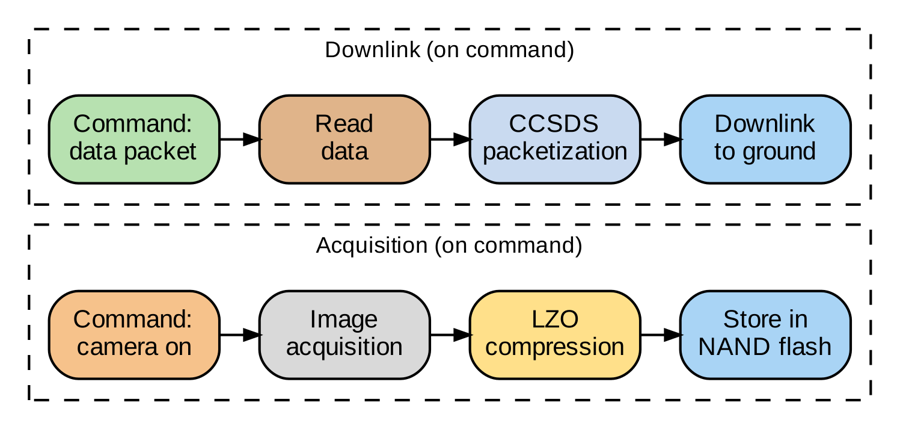
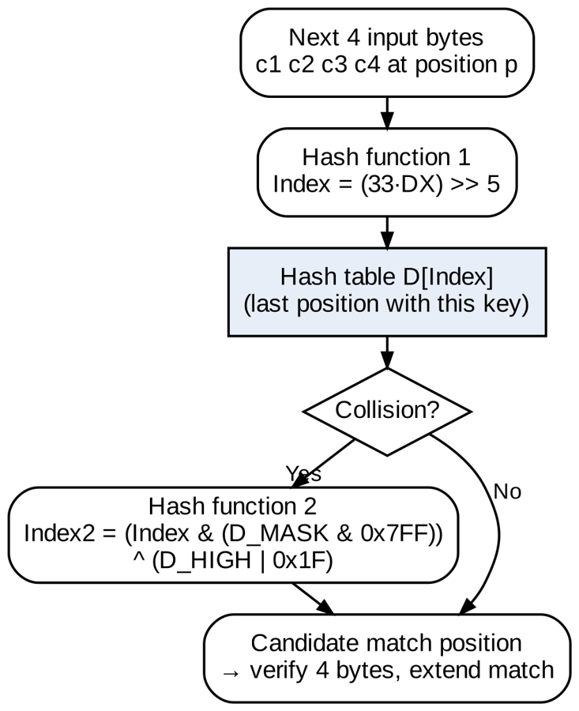
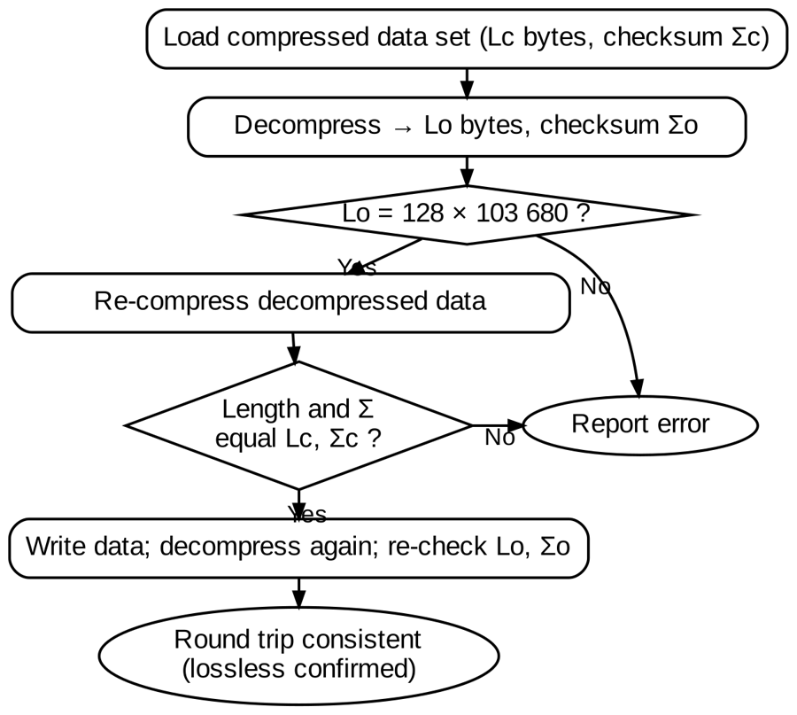
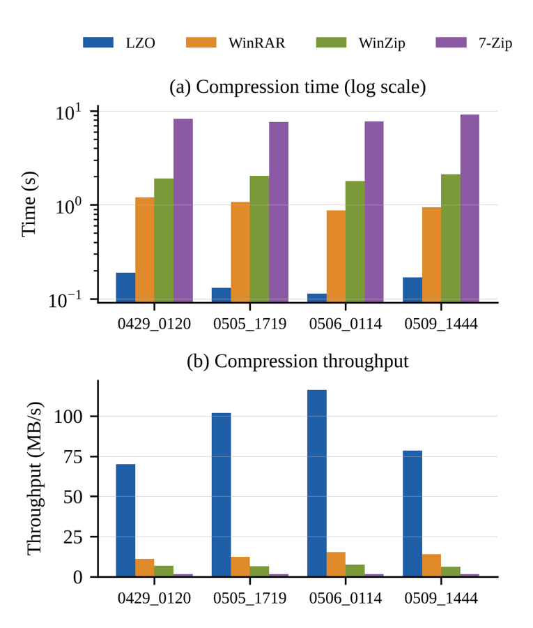

Lossless Onboard Compression for a Spaceborne Hyperspectral Imager
Space Optics Lab, NCU · Dec 2022 – Jun 2023 · Individual project
Advisor: Prof. C.-L. Kuo · Presented at the 2023 National Space Science and Engineering Student Symposium
Payload electronics of the hyperspectral imager, built around a SmartFusion2 SoC FPGA
Overview
A hyperspectral imager records the same scene in many narrow spectral bands, so it produces far
more data than onboard flash and a short downlink window can handle. The data must shrink without
losing a single sample, and the compressor has to keep up with the detector on a small space
processor. I implemented the LZO lossless algorithm, which flew on NASA's Spirit and Opportunity
rovers, and tested whether it meets these speed and integrity needs.

Where compression sits: acquisition (bottom) and downlink (top)
Why LZO is fast
LZO comes from the LZ77 family. Every token is a whole number of bytes, unmatched bytes are
grouped into runs, and a two-stage hash finds a match candidate in one or two table look-ups
instead of a search. Decompression only copies bytes, so it needs no working memory.

Two-stage hash search of LZO1X-1
Implementation and testing
Built a complete LZO1X-1(15) environment in C, then cross-compiled it for the Cortex-M3 of the SmartFusion2 processor, where it ran correctly.
Wrote a batch program that compresses 128 detector frames of 103,680 bytes each (13.27 MB per data set) and times only the compression calls.
Proved losslessness with a round trip: decompress, re-compress and decompress again, checking the length and checksum at every step.
Compared LZO with WinRAR, WinZip and 7-Zip on four recorded data sets.

Round-trip lossless verification
Results
Compressed each 13.27 MB data set in 0.114–0.19 s (70–116 MB/s) and cut its size by 36.8–50.8%.
Every data set came back bit-exact.
LZO was the fastest method in every test. The other tools saved more space, but at a much higher computing cost.
Method
Mean time (s)
Mean throughput (MB/s)
LZO speed-up
LZO
0.151
91.7
—
WinRAR
1.02
13.2
6.9×
WinZip
1.97
6.8
13.5×
7-Zip
8.20
1.6
56×

Compression time (top, log scale) and throughput (bottom) on four data sets
Next step: measure the throughput on the SmartFusion2 in the flight configuration, together with
CCSDS packetization.